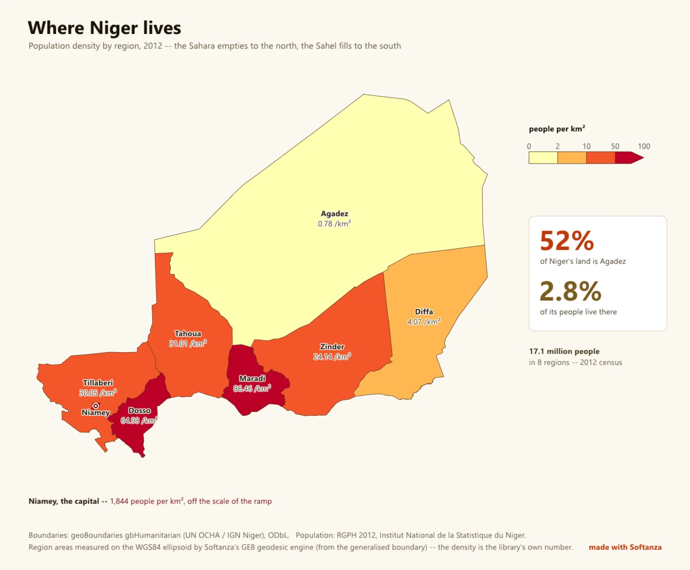

Géographie et cartographie
Un moteur de cartes qui fait aussi la géodésie et les statistiques spatiales ; la plomberie SIG est la frontière.
5 Strong · 2 Solid · 4 Partial · 1 Emerging
Mesuré contre : D3-geo · GDAL · PostGIS · Cartopy · Dossiers : base/geo(s'ouvre dans un nouvel onglet) · Le guide des fonctions de ce domaine

Repensé depuis les premiers principes
Ce que Softanza a gardé de ce qui marche, et ce qu'elle a repensé, tel que la bibliothèque l'a écrit dans ses documents de conception et ses narrations.
La manière SoftanzaUne carte affirme des choses sur le monde : elle doit donc dire comment elle a été faite et ne rien affirmer qu'elle ne puisse vérifier.
Gardé des meilleures pratiques
- Chaque carte passe par un même flux de traitement, repris de d3-geo (rotation, découpe sur la sphère, projection, rééchantillonnage, découpe au cadre) : aucune image ne peut sauter une étape. source(s'ouvre dans un nouvel onglet)
- Les étiquettes suivent quatre règles de QGIS, Mapbox et ArcGIS : une étiquette est une boîte, les grandes régions d'abord, un nom qui ne tient pas va à l'extérieur, ou disparaît. source(s'ouvre dans un nouvel onglet)
- Les dégradés sont les palettes ColorBrewer de Cynthia Brewer, écrites telles quelles plutôt que calculées : un dégradé calculé est un dégradé que personne n'a vérifié. source(s'ouvre dans un nouvel onglet)
Repensé
- Aucune donnée de frontières n'est livrée. Un tel fichier prend parti sur les frontières disputées, vieillit en silence et impose une licence : chacun apporte ou télécharge la sienne. source(s'ouvre dans un nouvel onglet)
- Une carte juge son propre raisonnement. Colorer des régions selon une valeur sur une projection qui gonfle les surfaces est signalé comme une erreur, car la couleur trahit la quantité. source(s'ouvre dans un nouvel onglet)
- L'échelle graphique est tracée à une latitude indiquée, et refusée si l'échelle varie trop sur la feuille : une barre juste sur une seule ligne trompe partout ailleurs. source(s'ouvre dans un nouvel onglet)
- Les noms de lieux sont rapprochés sans deviner. Une correspondance approximative est signalée, jamais coloriée, car colorier le Niger à la place du Nigeria est pire qu'un trou. source(s'ouvre dans un nouvel onglet)
A genuine standout: 44 self-inverting projections, full WGS84 geodesy, and a spatstat-class spatial-statistics engine ship together behind Haro faces, guarded by ~400 assertions and 72 negative controls. It is the rare library where the tool that draws the map also computes the statistics it shows and measures its own distortion — analysis-and-cartography strong, GIS-plumbing light.
Ce qu'un artisan en fait, et ce qui se distingue
- 44 self-inverting projections with a solver that refuses a bad inverse
- the tool that draws the map also computes the statistics and measures its own distortion
- ordinary kriging with its variance surface
- the Niger real-data map, vendor-free end to end
Ce qui est dû
- vector geometry overlay algebra
- source-CRS reprojection
- a GeoJSON / TopoJSON writer
- raster / DEM & GeoTIFF
La manière Softanza, exécutée
Ce que Softanza fait autrement dans ce domaine, montré par du code tiré de ses narrations et de ses gardes, et exécuté pour cette page.
Une carte colorée selon une valeur sur Mercator se signale elle-même en erreur, car la couleur parle alors pour des surfaces que la projection a gonflées.
# the guard's fixture: two countries, in the caller's own file
oF = StzGeoFeaturesFromJson(read("../graphics/fixtures/two_countries.geojson"))
oBad = StzGeoMap(new stzGeoProjection(:Mercator), oF)
oBad.SetValuesQ([ 4200, 99999 ]).SetClasses([ 0, 5000, 20000, 30000 ])
aBad = oBad.Findings()
chk("A CHOROPLETH ON A PROJECTION THAT DISTORTS AREA IS AN ERROR -- it encodes " +
"a quantity as the colour of an area, so the picture argues against its own legend",
_HasRule(aBad, "choropleth_needs_an_equal_area_projection", "error"))ok A CHOROPLETH ON A PROJECTION THAT DISTORTS AREA IS AN ERROR -- it encodes a quantity as the colour of an area, so the picture argues against its own legend
exécuté le 2026-10-01 21:20 dans la bibliothèque au commit 0e72e2e2c ; tiré de base/test/graphics/geo_map_narrated.ring(s'ouvre dans un nouvel onglet)
Un tableau saisi à la main se rattache aux formes fournies par l'appelant ; un nom qui ne correspond à rien, ici Atlantis, est signalé et jamais deviné.
# the guard's fixture: two countries, in the caller's own file
oF = StzGeoFeaturesFromJson(read("../graphics/fixtures/two_countries.geojson"))
oAt = StzGeoAtlas(oF)
aRows = [ [ "Arda", 10 ], [ "berea", 20 ], [ "Atlantis", 30 ] ]
aV = oAt.ValuesFor(aRows)
chk("A TABLE OF ROWS BECOMES ONE VALUE PER FEATURE, in the features' own order, " +
"which is what the map takes",
len(aV) = 2 and aV[1] = 10 and aV[2] = 20)
chk("...and what did not bind is ANSWERED rather than swallowed",
len(oAt.Unresolved(aRows)) = 1 and oAt.Unresolved(aRows)[1] = "Atlantis")ok A TABLE OF ROWS BECOMES ONE VALUE PER FEATURE, in the features' own order, which is what the map takes ok ...and what did not bind is ANSWERED rather than swallowed
exécuté le 2026-10-01 21:20 dans la bibliothèque au commit 0e72e2e2c ; tiré de base/test/graphics/geo_map_narrated.ring(s'ouvre dans un nouvel onglet)
Sollicitée pour une échelle graphique sur un planisphère Mercator, la carte refuse et répond 0, car aucune barre unique n'est juste sur toute la feuille.
# the guard's fixture: one square, on a world Mercator map
oSq = StzGeoFeaturesFromJson(_FSquare())
oMe = StzGeoMap(new stzGeoProjection(:Mercator), oSq)
oMe.Projection().FitToSphere(900, 900, 4)
oC1 = new stzCanvas(600, 300)
oC1.SetBackground("#FFFFFF")
oFont = new stzFont("../gpu/fixtures/amiri_arabic_subset.ttf") # a font the library commits
nDrew = oMe.DrawScaleBarOn(oC1, oFont, 12, 40, 200, 140, 0, "#333333")
? " drawing a bar on a world Mercator returned " + nDrewdrawing a bar on a world Mercator returned 0
exécuté le 2026-10-01 21:20 dans la bibliothèque au commit 0e72e2e2c ; tiré de base/test/graphics/geo_furniture_narrated.ring(s'ouvre dans un nouvel onglet)
Les couloirs, un par un
Les couloirs et leurs notes sont cités tels qu'ils ont été lus à la source, le Read from the source on 2026-09-16, from a read-only main worktree (HEAD 04cff1c34).
Les fonctions, par ce qu'elles font
Tester et vérifier
- IsUnclassed NO DATA MEANS NO VALUE, and it does not mean "a value my scale has no box for". A country measured at 35 on a scale topping out at 30 is data -- badly classed data, which is the cartographer's problem and not the country's -- and hatching it would tell the reader nobody counted it. So this asks for the VALUE where the map is numeric, and for membership where the map is categorical, since a map cannot be both. dans stzGeoMap
exemple composé
cJ = '{"type":"FeatureCollection","features":[{"type":"Feature","properties":{"name":"A"},"geometry":{"type":"Polygon","coordinates":[[[0,0],[4,0],[4,4],[0,4],[0,0]]]}}]}' oF = StzGeoFeaturesFromJson(cJ) o1 = StzGeoMap(new stzGeoProjection(:mercator), oF) ? o1.IsUnclassed(2) #--> 0composé à partir de la signature, exécuté pour cette page - HasThematicLayer is this map ABOUT something, or is it the ground under one? dans stzGeoMap
exemple composé
cJ = '{"type":"FeatureCollection","features":[{"type":"Feature","properties":{"name":"A"},"geometry":{"type":"Polygon","coordinates":[[[0,0],[4,0],[4,4],[0,4],[0,0]]]}}]}' oF = StzGeoFeaturesFromJson(cJ) o1 = StzGeoMap(new stzGeoProjection(:mercator), oF) ? o1.HasThematicLayer() #--> 0composé à partir de la signature, exécuté pour cette page - IsEqualArea what kind of lie this projection tells dans stzGeoProjection
exemple composé
o1 = new stzGeoProjection(:CylindricalEqualArea) ? o1.IsEqualArea() #--> 1
composé à partir de la signature, exécuté pour cette page - IsOnPaper does any point of this feature reach the paper at all? dans stzGeoMap
- Contains THE BOX FIRST. A ring test walks every edge; a box test is four comparisons, and for a point that is not in this region -- which is almost every pair a spatial join asks about -- the box is the whole answer. dans stzGeoFeatures
- HasInteraction DOES THIS PROCESS PLACE POINTS WITHOUT REGARD TO ONE ANOTHER? The three that do are the honest null models -- whatever a statistic sees in their output is chance. The four that do not have an interaction built in, and are what a caller tests FOR. dans stzGeoProcess
Compter et mesurer
- CountPointsIn how many points fell in each feature, in the features' own order -- which is exactly the shape SetValues takes, so a table of coordinates becomes a choropleth in two calls dans stzGeoMap
exemple composé
cJ = '{"type":"FeatureCollection","features":[{"type":"Feature","properties":{"name":"A"},"geometry":{"type":"Polygon","coordinates":[[[0,0],[4,0],[4,4],[0,4],[0,0]]]}}]}' oF = StzGeoFeaturesFromJson(cJ) o1 = StzGeoMap(new stzGeoProjection(:mercator), oF) ? @@( o1.CountPointsIn([ 2, 3 ]) ) #--> [ 1 ]composé à partir de la signature, exécuté pour cette page - Count what it holds dans stzGeoFeatures
exemple composé
cJ = '{"type":"FeatureCollection","features":[{"type":"Feature","properties":{"name":"A"},"geometry":{"type":"Polygon","coordinates":[[[0,0],[4,0],[4,4],[0,4],[0,0]]]}}]}' o1 = StzGeoFeaturesFromJson(cJ) ? o1.Count() #--> 1composé à partir de la signature, exécuté pour cette page - MeanCentre where the middle is, and how it spreads dans stzGeoPoints
exemple composé
cJ = '{"type":"FeatureCollection","features":[{"type":"Feature","properties":{"name":"A"},"geometry":{"type":"Polygon","coordinates":[[[0,0],[4,0],[4,4],[0,4],[0,0]]]}}]}' oW = StzGeoFeaturesFromJson(cJ) o1 = StzGeoPoints([ 1, 1, 2, 2, 3, 3 ], oW) ? @@( o1.MeanCentre() ) #--> [ 2.00, 2.00 ]composé à partir de la signature, exécuté pour cette page
Remplacer et modifier
- SetRamp the palette by the name of a ramp, in the classes already set dans stzGeoMap
- SetHatch THE COLOUR OF THE HATCH THAT SAYS "NOT MEASURED", on the map and in the legend's swatch, which are one thing and read from one place. The default is a blue-grey: cool, so it cannot be mistaken for a step in a warm ramp, and light, so a hatched country does not out-shout a measured one. dans stzGeoMap
- SetPaper where the boundaries came from and when. A map asserts where a border lies; this class will not invent the authority for it. THE BOX THE MAP WAS DRAWN IN, so a name cannot be written off the edge of it. Without this the label engine only knows where a region is, not where the sheet ends, and the first version wrote "Diffa" half into the margin beside it. Unset, nothing is clipped. dans stzGeoMap
- SetGroups paGroups is [ [ label, colour, [ member names ] ], ... ]. A country in two groups belongs to the FIRST that claims it, and that is reported too: overlapping blocs are a fact a reader must be told, not a tie for this file to break quietly. dans stzGeoMap
- SetKeyBox where the key is written: [ x0, y0, x1, y1 ]. With no key box set, a region that cannot carry its own name is dropped -- a number with nothing to look it up in is worse than a blank. dans stzGeoMap
- SetNoData THE COLOUR OF A REGION NO CLASS AND NO GROUP CLAIMS. It is a real statement -- "this one is not in the data" -- and a caller drawing a bloc map wants it quieter than the default, because on that sheet the unclaimed countries are most of the world. dans stzGeoMap
- SetValues what is being shown ------------------------------------------------- one value per feature, in the features' own order; "" where the map has a hole. A region with no value is DRAWN as no data and says so in the legend -- it is never quietly coloured as zero. dans stzGeoMap
- SetOpenTop IS THE TOP CLASS OPEN -- "30 and over" rather than "20 to 30". It is a statement about the SCALE, so it lives with the scale and not in the legend's argument list: the classifier and the legend both read it, and a reader must never meet an arrow the map refused to fill. dans stzGeoMap
- SetInsetInk AN INSET LABELS THE WAY ITS PARENT LABELS ITS UNITS -- names, or the parent's official codes where it has them, and never a sequential number, which would need a second key and a sheet with two keys has given up. If a mark still will not fit at the inset's scale it is REPORTED, and the answer is a larger box, not a cleverer placement. dans stzGeoMap
- SetKeyCodes OFF BY DEFAULT, and deliberately: official codes are not in reading order, so "08" sitting beside "59" tells a reader who does not already know them nothing about where to look. Sequential in reading order is the atlas default; the code is for a sheet drawn for people who are at home in it. dans stzGeoMap
- SetHighlight 1. BORDERS ARE DARK AND THIN, NOT WHITE. A white border between two pale classes erases the boundary exactly where the map is doing its work; a hairline of the ink colour separates them at every shade. Our World in Data, the Financial Times and the Economist all stroke dark, and the reason is legibility at the light end. 2. THE LEGEND IS A RAMP WITH ITS EDGES LABELLED, not a stack of "10 to 20" rows. A reader matches a colour to a position on a bar, and the numbers belong at the JOINS because that is where the meaning changes. It carries a NO-DATA swatch, hatched, so "not measured" is visibly not a value. 3. WHAT IS SELECTED IS OUTLINED, NOT RECOLOURED. Recolouring a selection destroys the one thing the map encodes. A heavy dark outline says "this one" while leaving its class readable. 4. TEXT OVER COLOUR NEEDS A HALO. A white name on a mid-orange is unreadable at every size; the same name with a thin dark halo is readable on every shade in the ramp. This is the colour system's contrast contract solved the way cartographers solve it, since a label on a choropleth has no single background to contrast with. the regions to outline heavily: by name, or by class through HighlightClass below dans stzGeoMap
- SetLabelMode THE MODE IS THE CALLER'S AND NEVER THE ENGINE'S, because the right answer depends on who is reading. A sheet for people who know the country wants :Names; a plate in a report wants :Numbers; a screen where one region is huge and its neighbour is a city wants :Auto. dans stzGeoMap
et 12 autres dans la référence
Ajouter
- AddInset paWindow is the ground to magnify, [ lon0, lat0, lon1, lat1 ]; paBox is where it goes on the canvas, [ x0, y0, x1, y1 ]. dans stzGeoMap
Découper et extraire
- PartContains is this place inside ONE PART of this feature? What a label placer asks: a name belongs in the part it was measured against, not merely somewhere in the country. dans stzGeoFeatures
- PartsOf every part of it, islands included dans stzGeoAtlas
Ordonner et déplacer
- Rotate the parameters ------------------------------------------------------ yaw, pitch, roll in degrees: d3's [lambda, phi, gamma]. To centre a globe on a place at (lon, lat), rotate by [-lon, -lat, 0]. dans stzGeoProjection
Convertir
- ToEnu ENU: THE LOCAL FRAME A PERSON LIVES IN -- east, north and up in metres about a chosen origin. A radar bearing, a survey offset, a drone's position or a robot's odometry is naturally in this frame, and the trip back out through ECEF is how such a thing lands on a globe. dans stzGeoEllipsoid
exemple composé
o1 = new stzGeoEllipsoid(:WGS84) ? @@( o1.ToEnu(2, 5, 2, 2, 2, 2) ) #--> [ -333604.02, 304.87, -8730.41 ]
composé à partir de la signature, exécuté pour cette page - ToEcef the frames ---------------------------------------------------------- ECEF: ONE CARTESIAN FRAME, metres on all three axes, origin at the Earth's centre, Z through the pole, X through where the equator meets the prime meridian. It exists because latitude and longitude cannot be subtracted: near a pole the same ground is a hundred times more degrees of longitude than at the equator, so an average of two coordinates, a difference, or anything handed to a linear-algebra routine is wrong. Height is metres ABOVE THE ELLIPSOID, which is not height above sea level -- the two differ by up to a hundred metres and the difference needs a geoid model this plane does not carry. dans stzGeoEllipsoid
exemple composé
o1 = new stzGeoEllipsoid(:WGS84) ? @@( o1.ToEcef(2, 5, 2) ) #--> [ 6350023.54, 555555.07, 221104.62 ]
composé à partir de la signature, exécuté pour cette page - AsRegions the regions the choropleth builder takes, so a file read here can go straight into DN24's picture: [ name, value, flatOuterRing ] each, from the LARGEST part of every feature dans stzGeoFeatures
exemple composé
cJ = '{"type":"FeatureCollection","features":[{"type":"Feature","properties":{"name":"A"},"geometry":{"type":"Polygon","coordinates":[[[0,0],[4,0],[4,4],[0,4],[0,0]]]}}]}' o1 = StzGeoFeaturesFromJson(cJ) ? @@( o1.AsRegions("a") ) #--> [ [ "A", "", [ 0, 0, 4, 0, 4, 4, 0, 4, 0, 0 ] ] ]composé à partir de la signature, exécuté pour cette page
Afficher, dessiner et mettre en forme
- BoxAreaKm2 ...and how much ground the BOX covers, which a CLUSTER process needs and the window's own area cannot answer. Parents are drawn in the box rather than in the window on purpose: a cluster whose centre falls just outside still throws children in, and dropping those parents would leave the window's edge visibly emptier than its middle -- the same edge effect Ripley's K corrects for, met on the generating side. dans stzGeoPoints
exemple composé
cJ = '{"type":"FeatureCollection","features":[{"type":"Feature","properties":{"name":"A"},"geometry":{"type":"Polygon","coordinates":[[[0,0],[4,0],[4,4],[0,4],[0,0]]]}}]}' oW = StzGeoFeaturesFromJson(cJ) o1 = StzGeoPoints([ 1, 1, 2, 2, 3, 3 ], oW) ? o1.BoxAreaKm2() #--> 196869.60composé à partir de la signature, exécuté pour cette page - DrawOn the layers ---------------------------------------------------------- the sphere, the graticule, then every feature in its class's colour, then the world's edge on top: the order an atlas draws them in dans stzGeoMap
- DrawKeyOn THE KEY, in as many columns as its box will carry. A key that runs off the bottom of its box is a key that lost entries silently, so the column width comes from the widest entry ACTUALLY PRESENT and the row count from the box's own height. dans stzGeoMap
- DrawFlowOn The stroke then varies with SPEED, because a streamline of constant width says every part of the flow is equally fast, and that is the one thing a streamline cannot otherwise deny. dans stzGeoMap
- DrawFlowsOn flows --------------------------------------------------------------- A FLOW IS A GREAT CIRCLE, not a straight line on the paper: the route between two places bends on every projection, and drawing it straight is drawing a journey nobody takes. Each route is [ lon1, lat1, lon2, lat2 ] or the same with a width as a fifth item. dans stzGeoMap
- DrawNightOn FOUR NESTED CAPS give the gradient a reader sees at dusk: the sun is 6 degrees below the horizon at 84 from the antipode, nautical at 78, astronomical at 72. Drawn outermost first, each translucent, so they ACCUMULATE -- the deepest night is four layers deep and full dark is reached gradually rather than in one step. dans stzGeoMap
- DrawSheetOn THE REGIONS, DRAWN THE WAY A STATISTICAL MAP DRAWS THEM: dark hairline borders, the highlighted ones outlined heavily on top, and each one carrying its identity when the map is interactive. dans stzGeoMap
- DrawLegendOn the legend and the caption ------------------------------------------- THE LEGEND SAYS WHAT EVERY SHADE MEANS, and a class that colours nothing says so: a legend promising a shade the map never shows is the fault DN24's own rules were written to catch, and it is the same fault here. dans stzGeoMap
- DrawSymbolAt a symbol at a place the caller names, rather than at a feature dans stzGeoMap
- DrawHexBinsOn the bins drawn, each in the colour its COUNT earns from the edges given. A bin holding nothing is not drawn: an empty cell is not a quantity of zero, it is a place nobody counted. dans stzGeoMap
- DrawRegionsOn every feature, in the colour its value earns it dans stzGeoMap
- DrawSymbolsOn symbols ------------------------------------------------------------- A CIRCLE'S AREA CARRIES THE VALUE, NEVER ITS RADIUS. Doubling a radius quadruples the ink, so a symbol map scaled by radius overstates its largest places fourfold -- the oldest lie in the genre, and the one a reader cannot see being told. The radius here is proportional to the SQUARE ROOT of the value, so equal values draw equal ink. dans stzGeoMap
et 18 autres dans la référence
Lire et écrire
- ReadGeoJson reading dans stzGeoFeatures
- ReadTopoJson THE ARCS ARE SHARED AND THE NUMBERS ARE DELTAS. A TopoJSON stores each border once and every shape as the arcs that bound it; -1 means arc 0 walked backwards (the format writes ~i, which is -i-1). The positions inside an arc are cumulative sums on a quantised grid and become degrees through the transform. dans stzGeoFeatures
Les explications sont celles que la bibliothèque donne d'elle-même, en anglais, lues dans ses commentaires de documentation le 2026-10-01 04:14, from the library at commit 0e72e2e2c, by the library's own stzSelfDoc over 635 class sources.
Les classes de ce domaine
- stzGeoMap · 113 méthodes
- stzGeoProjection · 53 méthodes
- stzGeoEllipsoid · 45 méthodes
- stzGeoField · 33 méthodes
- stzGeoFeatures · 32 méthodes
- stzGeoPoints · 30 méthodes
- stzGeoProcess · 25 méthodes
- stzGeoSamples · 23 méthodes
- stzGeoAtlas · 13 méthodes